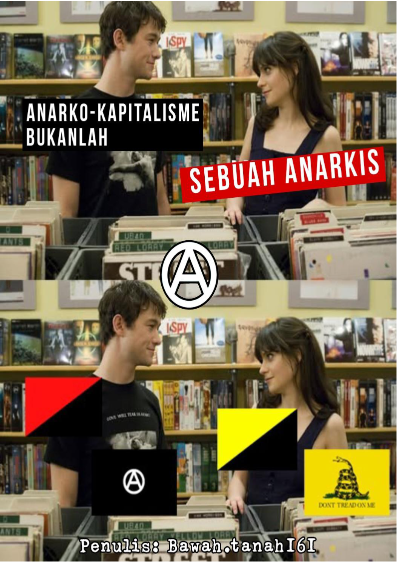
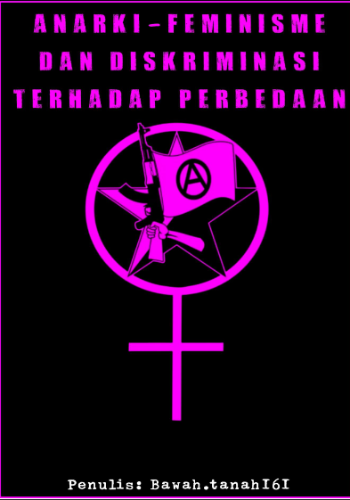

Tulisan Kami

Anarko-Kapitalisme Bukanlah Sebuah Anarkis
Pencarian akan kebebasan sejati seringkali membawa kita pada persimpangan ideologi yang membingungkan.
Dalam beberapa dekade terakhir, sebuah konsep usang yang dibungkus dengan kemasan baru bernama
"anarko-kapitalisme" mencoba menyusup ke dalam ranah pemikiran libertarian radikal.
Mereka mengklaim diri sebagai perpanjangan dari tradisi anarkisme, sebuah klaim yang tidak hanya keliru secara historis,
tetapi juga kontradiktif secara logis.
Buku kecil ini ditulis bukan untuk mendiskreditkan keinginan individu akan kebebasan, melainkan untuk meluruskan distorsi
konseptual yang berpotensi mengaburkan esensi dari perjuangan pembebasan itu sendiri. Anarkisme, sejak awal kelahirannya di rahim abad ke-19,
tidak pernah sekadar berkutat pada penghapusan negara sebagai institusi formal. Ia adalah sebuah kritik
menyeluruh terhadap segala bentuk hirarki, dominasi, dan eksploitasi manusia atas manusia lainnya.
Memisahkan anarkisme dari akar anti-kapitalismenya adalah sebuah bentuk amputasi teoretis. Melalui
lembar demi lembar dalam buku ini, kita akan membedah mengapa modal dan kebebasan radikal tidak akan
pernah bisa berjalan beriringan di bawah satu bendera yang sama. Terima kasih kepada kawan-kawan
jaringan akar rumput yang terus merawat nalar kritis dan menjaga api perlawanan tetap menyala di
ruang-ruang kolektif. Buku ini dipersembahkan untuk mereka yang menolak tunduk, baik kepada tatanan
birokrasi negara maupun kepada totalitarianisme pasar. Semoga untaian pemikiran sederhana ini dapat
menjadi pemantik diskusi yang lebih dalam di pelataran-pelataran diskusi kita.

Mengapa Negara Takut Dengan Simbol A?
Bagi masyarakat umum, anarkisme sering kali diidentikkan dengan
vandalisme, kerusuhan, dan kekacauan. Narasi ini tidak lahir dari ruang
hampa, melainkan sengaja diproduksi oleh aparatur negara dan media
arus utama untuk mengerdilkan sebuah filosofi politik yang usianya sudah
berabad-abad.
Simbol "A" dalam lingkaran (Circle-A) sejatinya merupakan
pengejawantahan dari gagasan bapak anarkisme modern, Pierre-Joseph
Proudhon: "Anarchy is Order Without Power" (Anarki adalah Keteraturan
Tanpa Kekuasaan). Huruf 'A' mewakili Anarchy, sedangkan lingkaran 'O'
yang mengelilinginya mewakili Order.
Buku ini lahir dari kegelisahan melihat bagaimana ideologi yang
menitikberatkan pada kebebasan individu, swadaya (mutual aid), dan
desentralisasi kekuasaan terus-menerus dikriminalisasi. Negara takut
dengan simbol "A" karena simbol tersebut mempertanyakan fondasi
utama eksistensi negara itu sendiri: hierarki dan monopoli kekerasan. Jika
manusia bisa hidup teratur melalui kerja sama komunal tanpa paksaan
dan majikan, maka untuk apa negara dan kelas penguasa ada?
Melalui 13 bab di buku ini, kita akan membongkar mitos-mitos tersebut,
melihat kembali sejarah panjang gerakan akar rumput, dan memahami
mengapa kekuasaan sangat gemetar ketika rakyat mulai menyadari bahwa
mereka bisa mengurus dirinya sendiri.
Solidaritas tanpa batas, Bawah.tanah161

Anarki-Feminisme Dan Diskriminasi Terhadap Perbedaan
Buku kecil ini lahir dari kegelisahan yang mendalam terhadap realitas sosial yang kian
hari kian meminggirkan mereka yang berbeda. Di bawah bayang-bayang institusi besar
dan norma-norma yang dipaksakan, kebebasan individu seringkali digilas demi
keseragaman yang semu. Anarki-feminisme hadir bukan sekadar sebagai teori politik di
atas kertas, melainkan sebagai sebuah pisau analisis dan kompas tindakan untuk
membongkar akar-akar penindasan tersebut. Kami melihat bahwa patriarki dan hierarki
tidak dapat dipisahkan; keduanya adalah dua sisi dari koin yang sama yang terus
memproduksi diskriminasi terhadap tubuh, identitas, dan pilihan hidup manusia.
Melalui lembar-lembar berikutnya, pembaca diajak untuk menelusuri bagaimana
dominasi bekerja dalam ruang paling intim hingga ruang publik. Kami tidak
menawarkan blueprint kaku tentang masa depan, melainkan sebuah undangan untuk
berpikir merdeka dan mengorganisasi diri secara mandiri. Apresiasi terbesar saya
sampaikan kepada seluruh kawan sejawat di jaringan akar rumput yang terus merawat
api perlawanan dan solidaritas tanpa pamrih. Semoga tulisan ini dapat menjadi
pemantik diskusi yang hangat, sekaligus bahan bakar bagi tindakan-tindakan nyata di
lapangan demi tatanan dunia yang lebih adil dan setara.

LANGKAH-LANGKAH Ⓐ BERGERILYA DI URBAN
Kota-kota modern hari ini seringkali menjadi ruang yang mengasingkan bagi manusia
yang hidup di dalamnya. Di tengah beton dan rutinitas yang mekanis, individu
dipisahkan satu sama lain oleh sekat-sekat ekonomi dan sosial. Buku ini hadir bukan
sebagai manual taktis kekerasan, melainkan sebagai panduan gagasan untuk merebut
kembali ruang hidup melalui pembangunan solidaritas yang kokoh, otonom, dan tanpa
hierarki. Istilah "gerilya" dalam konteks ini digunakan secara metaforis untuk
menggambarkan gerakan organik, senyap, namun berdampak besar dalam membangun
alternatif sosial langsung di tingkat akar rumput.
Melalui perpaduan antara manajemen organisasi ala Anarko-Sindikalisme, distribusi
berbasis kebutuhan dari Anarko-Komunisme, dan kegesitan aksi dari tradisi
insureksioner yang damai namun asertif, tulisan ini mencoba memetakan bagaimana
jaringan solidaritas dapat dibentuk di lanskap urban. Kita tidak sedang menunggu masa
depan yang utopis, melainkan menciptakan ruang-ruang merdeka di sini dan saat ini.
Selamat membaca, semoga gagasan ini memantik ruang diskusi dan tindakan nyata di
lingkungan sekitar Anda.